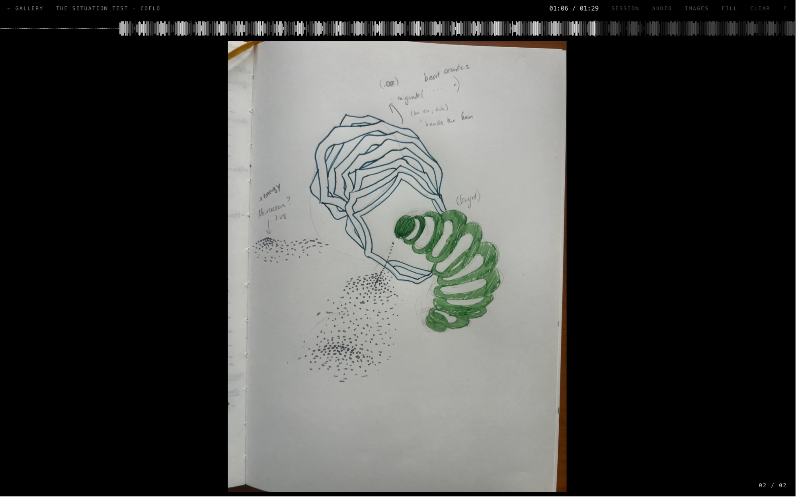

A journal of the visuals music brings up for me: color, motion, texture and energy, and how they change over the length of a track. Each session is one song on one day. I mark moments while listening, then fill in what I saw and pin my paper sketches to the timeline.
